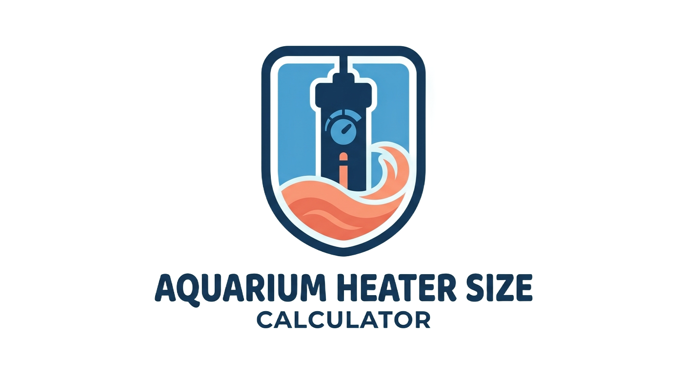

Find the perfect heater wattage for you tropical or cold-water setup.
An undersized heater will struggle to keep you water warm during winter, while an oversized heater can be a safety risk if the thermostat fails.
For larger tanks (over 50 gallons), many hobbyists prefer using two smaller heaters instead of one large one. If one fails "on," it is less likely to overheat the tank; if one fails "off," the second heater provides a safety net.